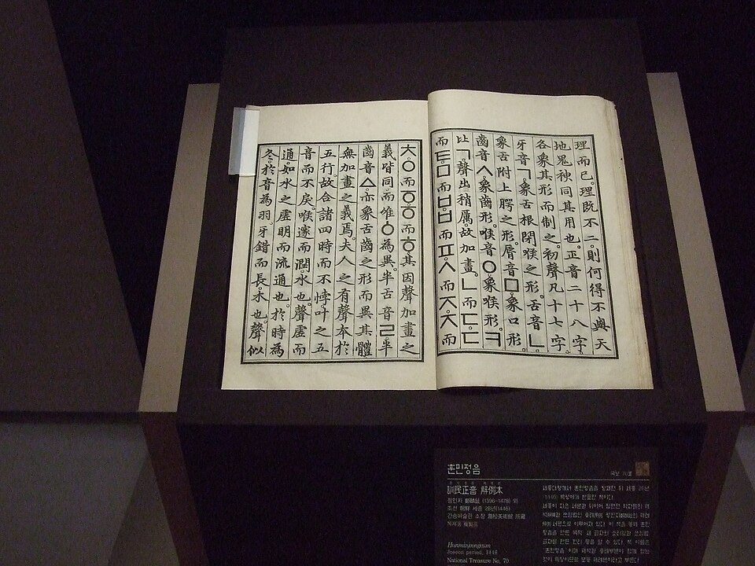

광화문 광장의 세종대왕

훈민정음 해례본 — 1446
세종은 1443년에 28자를 만들었습니다. 자음은 발음기관의 모양을, 모음은 하늘·땅·사람을 본떴습니다. 그리고 — 이 자모를 위아래·좌우로 짜 맞춰 한 음절을 만듭니다.
알파벳처럼 한 줄도 아니고, 한자처럼 한 덩어리도 아닙니다. 둘 사이의 제3의 길 — '사'와 '랑'을 합쳐 '사랑'이 됩니다. 음절 안에 자모가, 단어 안에 음절이.